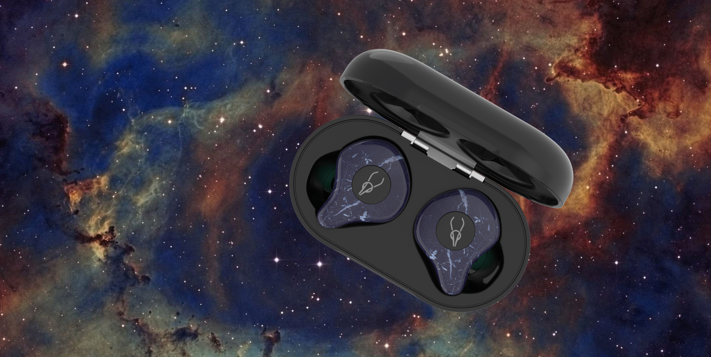
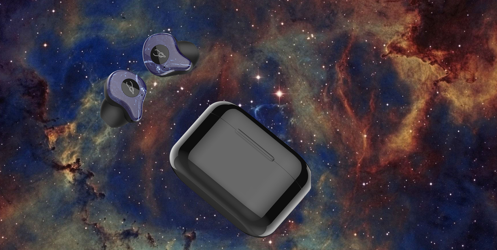

Sabbat X12 Ultra has good autonomy to charge the headset less often, and a comfortable fit in the ear for long minutes of enjoying your favorite music. It is worth noting the high sound quality of the Sabbat X12 Ultra. They will give you everything you want: up to 8 hours of music playback, ergonomic design and support for AptX and AAC codecs thanks to the Qualcomm chipset.
Up to 8 hours of music playback, and with a 750 mah case, the operating time can be extended up to 48 hours. Support for modern AptX and AAC codecs thanks to the Qualcomm 3020 chipset for Hi-Fi quality sound transmission with minimal loss. The AptX codec allows you to listen to music with a sampling rate of up to 48 KHz.
Modern Bluetooth 5.0 module from Qualcomm: for the fastest pairing of headphones with your phone and incredible connection stability. The working range of the Sabbat X12 Ultra headphones reaches a distance of up to 10 meters without significant obstacles. Thanks to the Qualcomm 3020 chip, the headphones support Clear Voice Capture 8.0 microphone noise reduction technology to enhance voice clarity. Your interlocutors will hear your every word and nothing more!
The autonomy of the headphones is from 6 to 8 hours from a single charge. The capacity of each X12 Ultra is 60 mAh, the charging time of the earbuds is 60 minutes. The Sabbat X12 Ultra comes with a 750mAh charging case for 5 headphone charges. It will provide a total of up to 48 hours of working time. The case uses a USB-C connector, which allows you to spend less time recharging it.
The inner part of the Sabbat X12 Ultra follows the shape of the ear, providing a secure fit and great sound. The set includes 2 sets of ear clips that can be worn during active workouts so that you can practice without worrying about the headphones falling out.
Attention: Do not use any chargers with fast charging function. When charging the headphones, you must use an adapter with a voltage / current of no more than 5V/1A.
Sabbat X12 Ultra is a good investment in really cool audio equipment. These wireless headphones will delight you with balanced detailed sound and a moderately wide stage. With support for Bluetooth 5.0, plus AptX and AAC codecs that improve sound quality, you'll have the perfect wireless companion for productive workouts, long drives, or those long-awaited conversations with your loved one.
| Wearing Type | in-ear |
| Material | ABS+PC |
| Microphone | Yes |
| Bluetooth Version | V5.0 |
| Transmission Distance | 10m |
| Frequency Response | 20 - 20000Hz |
| Battery Capacity | Earbud: 60mAh*2 Charging Case: 750mAh |
| Music Time | Earbuds: 6-8h Total: 48h |
| Charging time | 1 hour |
| Charging Port | Type-C |
| Impedance | 32Ohm |
Odesza - The Last Goodbye (feat. Bettye LaVette)
or